-Chetan G.
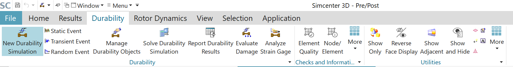
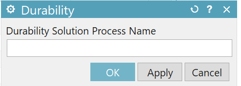
New durability simulation is created and can be seen in the Simulation Navigator.
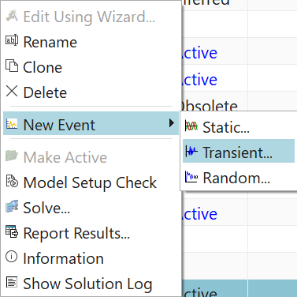
There are three types of events: static, transient, and random.
Static event supports the following solutions:
SOL 101 Linear Statics — General Constraints
SOL 101 Linear Statics — Subcase Constraints
SOL 101 Superelement
SOL 101 Adaptive
SOL 106 Nonlinear Statics — Global Constraints
SOL 106 Nonlinear Statics — Subcase Constraints
SOL 129 Nonlinear Transient Response
SOL 401 Multi-Step Nonlinear
SOL 601,106 Advanced Nonlinear Statics
SOL 601,129 Advanced Nonlinear Transient
SOL 701 Explicit Advanced Nonlinear Analysis
When SOL 401 is chosen as a static event, only one time step can be selected as excitation of the event. When multiple excitations are created, then the durability solution is superimposed. Therefore, transient loads can not be selected here.
Transient event supports the following solutions:
SOL 103 Flexible Body
SOL 106 Nonlinear Statics — Global Constraints
SOL 106 Nonlinear Statics — Subcase Constraints
SOL 109 Direct Transient Response
SOL 112 Modal Transient Response
SOL 129 Nonlinear Transient Response
SOL 401 Multi-Step Nonlinear
SOL 601,106 Advanced Nonlinear Statics
SOL 601,129 Advanced Nonlinear Transient
SOL 701 Explicit Advanced Nonlinear Analysis
A random durability event references a Response Dynamics solution process and its random event.
[Ref: https://docs.plm.automation.siemens.com/tdoc/nx/1899/nx_help#uid:xid1128419:index_advanced:xid385327:id1609541]
In this example we chose transient event with solution SOL401-nonlinear dynamics.
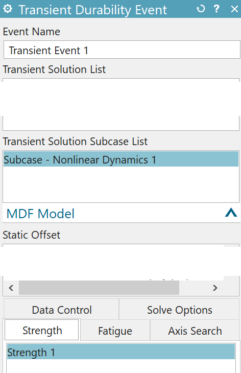
Strength durability object | Defines requests for stress criterion, stress type, and strength output. |
Fatigue durability object | Defines fatigue life settings, fatigue life output requests, fatigue safety factor settings, and fatigue safety factor output requests. |
Random fatigue durability object | Defines random fatigue settings and fatigue life output requests. |
Axis search durability object | Defines the stress axis method and settings for calculating stress damage propagation. |
Solve options durability object | Defines element and material overrides. If you select only a portion of your model to perform the durability analysis, you reduce the solve time. You can override the material specified on the model if either of the following conditions is true:
|
[Ref: https://docs.plm.automation.siemens.com/tdoc/nx/1899/nx_help#uid:xid1128419:index_advanced:xid385327:xid452758]
Click on Edit Strength Settings, which leads to Strength tab.
Durability solver can evaluate: strength safety factor (SSF) and Margin of Safety (MS).
SSF = max [Stress criterion / max(Stress(ti))]
MS = (SSF/FS - 1) x 100 %. (FS = factor of safety)
[ref: https://docs.plm.automation.siemens.com/tdoc/nx/1899/nx_help#uid:xid1128419:index_advanced:xid385327:id635096:id624901]
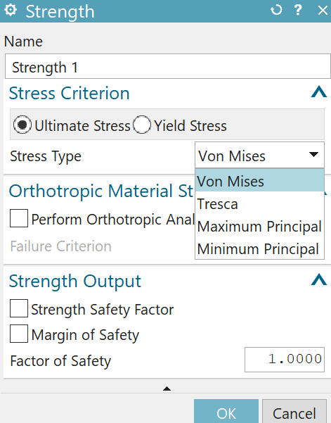
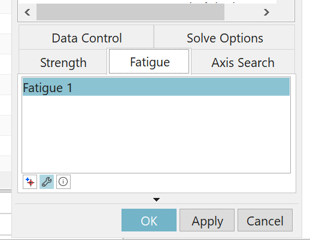
In the fatigue tab we set the criterias to evaluate the life and damage due to fatigue. Make sure you have already defined the S-N curve in the material fatigue properties. (E-N curve is defined if strain based method is used.)
Fatigue life criteria | Fatigue evaluation | Fatigue application | Mean stress effect | Plate thickness correction | Notch factor | Material type |
|---|---|---|---|---|---|---|
Smith-Watson-Topper | Strain-based | Low cycle | Included | Not applicable | Optional | Isotropic |
Strain Life Maximum Principal | Strain-based | Low cycle | Optional | Not applicable | Optional | Isotropic |
Strain Life Maximum Shear | Strain-based | Low cycle | Not applicable | Not applicable | Optional | Isotropic |
Stress Life | Stress-based | High cycle | Optional | Optional | Optional | Isotropic |
BWI | Stress-based | Low cycle High cycle | Optional | Optional | Not applicable | Isotropic |
TWI | Stress-based | Low cycle High cycle | Optional | Optional | Not applicable | Isotropic |
[Ref: https://docs.plm.automation.siemens.com/tdoc/nx/1899/nx_help#uid:xid1128419:index_advanced:xid385327:id635096:id624881]
In this example we chose stress life method, as it is based on S-N curve. For more information of S-N curve based method ref: https://community.sw.siemens.com/s/article/what-is-a-sn-curve.
Stress life method is suitable when stress and strain remain in the elastic region. Strain life methods take effect of both the elastic and plastic regions into account. [Ref: https://community.sw.siemens.com/s/article/The-Strain-Life-Approach]
Strain life methods above are suitable for low cycle fatigue analysis. Stress life method with user input S-N curve is suitable for both low cycle and high cycle fatigue.
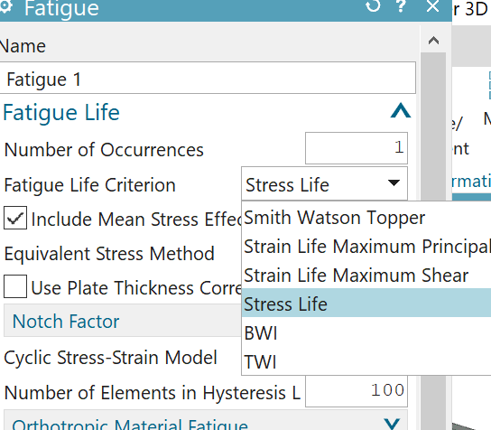
S-N curves are defined for zeo mean stress. However, for materials under tensile mean stress, the fatigue life is reduced. To take the effect of non-zeo mean stress effect several methods are available.
Goodman method
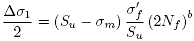
Soderberg method
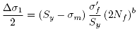
Gerber method
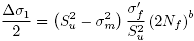
Morrow method
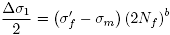
[Ref:
https://docs.plm.automation.siemens.com/tdoc/nx/1899/nx_help#uid:xid1604722 ; https://docs.plm.automation.siemens.com/tdoc/nx/1899/nx_help#uid:xid1128419:index_advanced:xid385327:id635096:id624881:id975729]
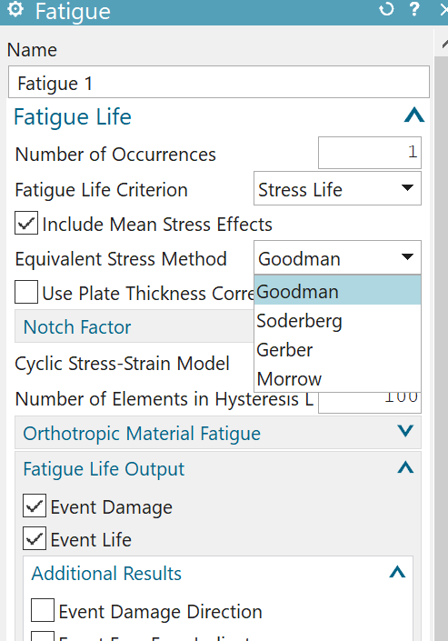
Thickness correction factor (TCF) is plate thickness ration raised to the power of plate thickness exponent. When this option is chosen, the stress range is divided by TCF before calculating the life.
In this example we don't know the plate thickness ratio and plate thickness exponent. We do not chose this option.
[TFC Ref: https://docs.plm.automation.siemens.com/tdoc/nx/1899/nx_help#uid:xid1128419:index_advanced:xid385327:id635096:id624881:id1190369]
Similarly we do not know the notch factor and we do not chose this option.
[Notch factor reference: https://docs.plm.automation.siemens.com/tdoc/nx/1899/nx_help#uid:xid1604229]
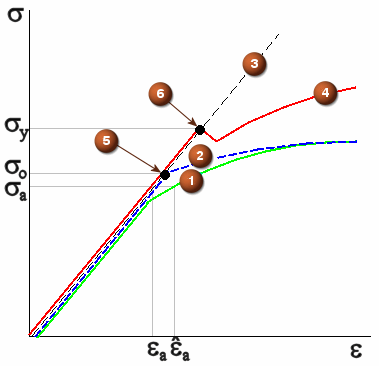
Note: cyclic stress strain model is supposed to work with notch factor, however, filling this is mandatory in the fatigue tab. We chose Ramberg-Osgood model. Cyclic strength coefficient must be filled in the material properties. When this property is not filled, durability solver uses default value 1e+12.
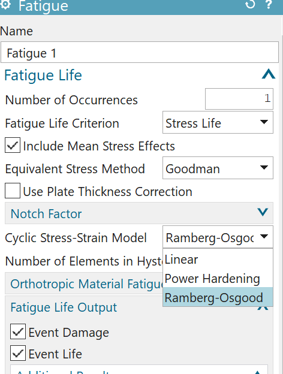
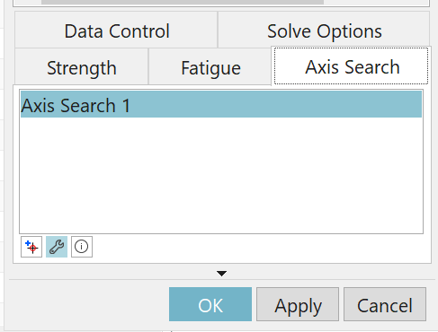
Specifies how the primary loading direction is determined. The primary loading direction, also called the stress axis direction, is the most likely direction along which cracks would initiate.
Select Element Face to let the durability solver find the critical loading path of the structure.
Element Face Stress Axis:
Select Uni-Axial to ignore stresses or strains acting perpendicularly to the crack propagation direction.
Select Bi-Axial to let the stresses or strains acting perpendicularly to the crack propagation direction contribute to the calculation of crack growth.
Stress Axis Direction Search Method :
Select Principal Axis to let the solver use a statistical approach to identify the primary loading direction on element free faces.
[Ref: https://docs.plm.automation.siemens.com/tdoc/nx/1899/nx_help#uid:id973952]
Note : Since the stress history evaluated by the durability solver is dependent on the axis search method, it is clearly not the same as stress results obtained by Nastran solver. The details are to be studied.
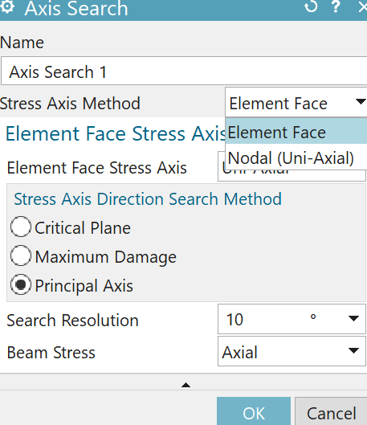
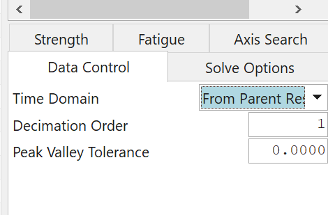
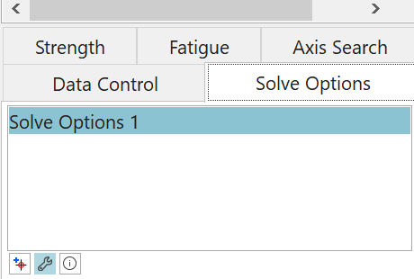
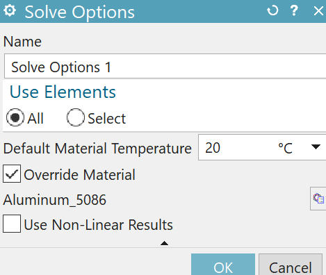
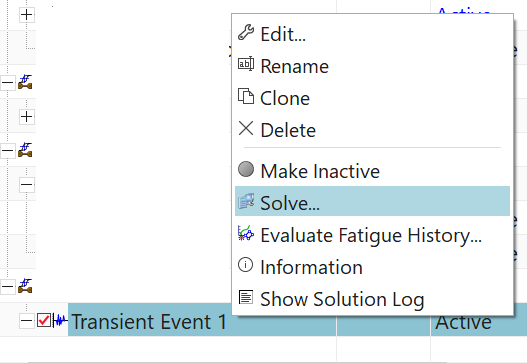
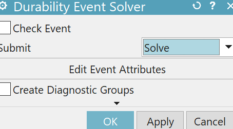
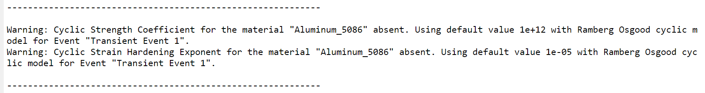
View the requested outputs as results under post processing navigator.